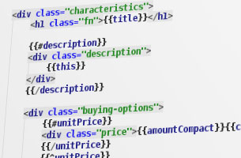
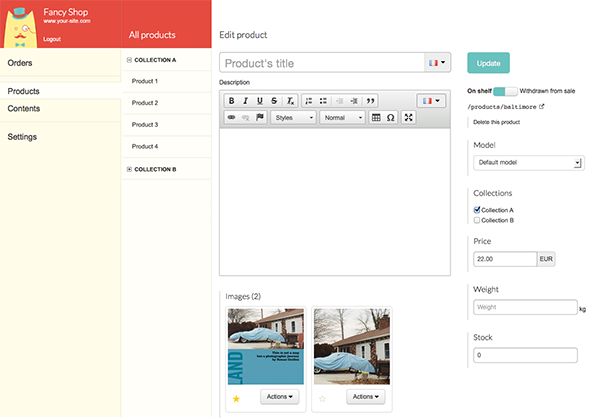
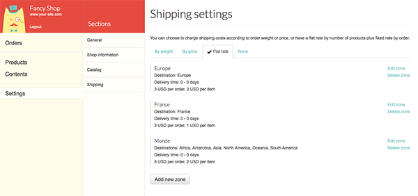
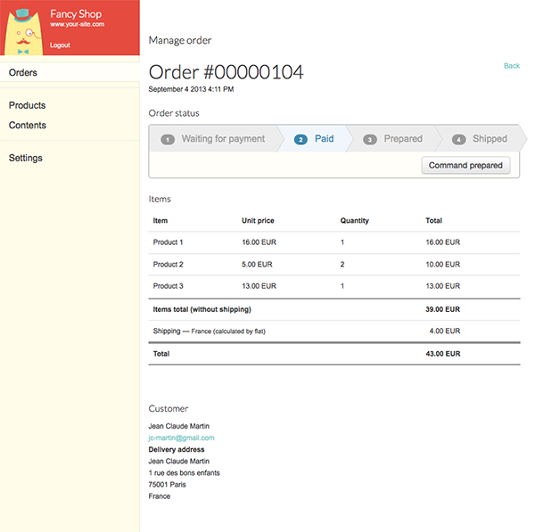
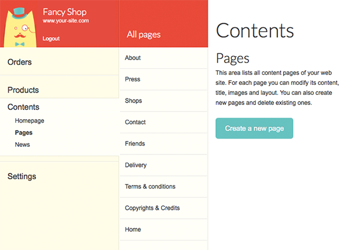
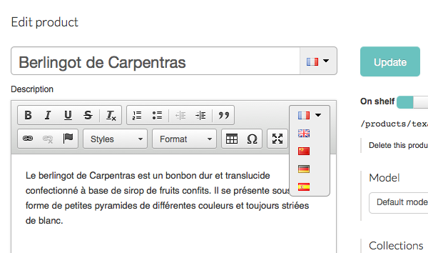
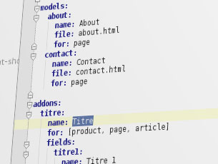

Create your e-shop using only HTML and Mustache / Handlebars

Mayocat Shop make the creation of an e-shop almost as easy as creating its layout in HTML. With Handlebars you handle simple markups (called bindings) to display the content. For example {{title}} display the title and {{description}} display description.
Mayocat Shop is made with APIs you can acces via Javascript, so you can always display the content you need in the way you want.
Learn the basics of Mayocat Shop
Easy to use back-office for a smooth daily management
Mayocat Shop’s back-office has been created to fit the need of small businesses, the interface is lean and simple to use.
Discover the basic functionalities :
Product management
Inventory management
Shipping management
Order management
CMS functionalities
Internationalization management
Product management
Create, modify, suppress and organize your product in seconds.

Inventory management
To manage your inventory, just fill the number of products you have to sell, then if you have more product to sell you can easyly increase your stock.
Shipping management
Mayocat Shop propose 3 way to calculate shipping cost :
By weight : define price by weight range and for additionnal weight.
By price: define price by price range and for additionnal weight.
Flat rate: define price by product and by order.
Once you’ve choose your way to calculate shipping cost, you can setup geographical zones (continent, country, region) and define prices for each one.

Order management
Manage your order in the backoffice or by receiving e-mails.

CMS functionalities
Mayocat Shop provides simple CMS functionnalities to manage page, homepage, news, products and images.

Internationalization management
Simply add language and manage translation of content. Mayocat Shop will automatically display the right language to customers on the front end.

You want to test our backoffice
demo.mayocatshop.com/admin/
Login : demo
Password : demo
Adapt Mayocat Shop to your needs with YAML

When you deploy an e-shop with Mayocat Shop you can easyly setup custom data called addon for page or product. It allows you to link a content to a page or a product and easyly edit it via Mayocat Shop’s backoffice.
For example if your e-shop sells product from different brands, you will add a simple text addon called “brand”; and if you sells only 3 brands you will add a selector.
Learn how addons works
Create performant mobile shops
But I must explain to you how all this mistaken idea of denouncing pleasure and praising pain was born and I will give you a complete account of the system, and expound the actual teachings of the great explorer of the truth, the master-builder of human happiness. No one rejects, dislikes, or avoids pleasure itself, because it is pleasure, but because those who do not know how to pursue pleasure rationally encounter consequences that are extremely painful.
Nor again is there anyone who loves or pursues or desires to obtain pain of itself, because it is pain, but because occasionally circumstances occur in which toil and pain can procure him some great pleasure. To take a trivial example, which of us ever undertakes laborious physical exercise, except to obtain some advantage from it? But who has any right to find fault with a man who chooses to enjoy a pleasure that has no annoying consequences, or one who avoids a pain that produces no resultant pleasure.
Learn how to configure your shop
??????
But I must explain to you how all this mistaken idea of denouncing pleasure and praising pain was born and I will give you a complete account of the system, and expound the actual teachings of the great explorer of the truth, the master-builder of human happiness. No one rejects, dislikes, or avoids pleasure itself, because it is pleasure, but because those who do not know how to pursue pleasure rationally encounter consequences that are extremely painful.
Nor again is there anyone who loves or pursues or desires to obtain pain of itself, because it is pain, but because occasionally circumstances occur in which toil and pain can procure him some great pleasure. To take a trivial example, which of us ever undertakes laborious physical exercise, except to obtain some advantage from it? But who has any right to find fault with a man who chooses to enjoy a pleasure that has no annoying consequences, or one who avoids a pain that produces no resultant pleasure.
Learn how to configure your shop
Mayocat Shop belongs to its open community
Mayocat Shop is released under an open source license (the Mozilla Public License version 2) that is friendly both to businesses and to the community of contributors.
We are taking the open source promise seriously and are dedicated to sustain this promise in the long term so that Mayocat Shop continues to belong to its community. In the same movement, we do want to advocate Mayocat Shop as a viable platform for businesses and e-commerce professionals to build upon, as we believe it's also an important component of the long term viability of the project.
Checkout the community area
Take advantage of states of the arts technologies
Back-office
 PostgreSQL, ElasticSearch, REST/Jersey, Jetty...
PostgreSQL, ElasticSearch, REST/Jersey, Jetty...
Front-office
 Javascript, Mustache / Handlebars
Javascript, Mustache / Handlebars
API
Mayocat is based on the Java platform, and uses great open source technologies : Java 7, ElasticSearch,
PostgreSQL, Jersey, Jetty and many more, in order to streamline its development and provide the best performance
and maximum scalability.
Learn how to configure your shop
Build scalable marketplace with Mayocat Shop APIs
But I must explain to you how all this mistaken idea of denouncing pleasure and praising pain was born and I will give you a complete account of the system, and expound the actual teachings of the great explorer of the truth, the master-builder of human happiness. No one rejects, dislikes, or avoids pleasure itself, because it is pleasure, but because those who do not know how to pursue pleasure rationally encounter consequences that are extremely painful.
Nor again is there anyone who loves or pursues or desires to obtain pain of itself, because it is pain, but because occasionally circumstances occur in which toil and pain can procure him some great pleasure. To take a trivial example, which of us ever undertakes laborious physical exercise, except to obtain some advantage from it? But who has any right to find fault with a man who chooses to enjoy a pleasure that has no annoying consequences, or one who avoids a pain that produces no resultant pleasure.
Learn how to configure your shop